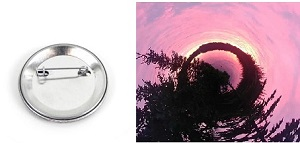
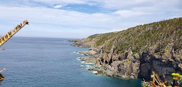
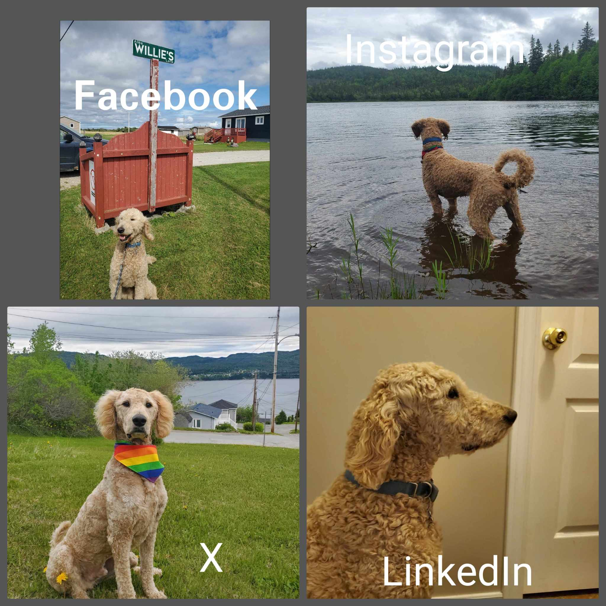
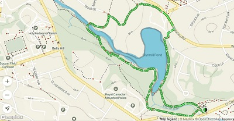

Wilfred: A YouTube Sensation
Wilfred, the exuberant 5-year-old Goldendoodle, is a bundle of furry joy that captivates the hearts of all who encounter him. With a luscious coat of golden curls and a perpetually wagging tail, Wilfred is the epitome of canine enthusiasm. His favorite pastime involves exploring the picturesque landscapes of Newfoundland, turning every walk into an exciting adventure. Whether it's the rugged coastlines, serene forests, or charming neighborhoods, Wilfred's curiosity knows no bounds.
One of Wilfred's endearing traits is his knack for leading his human companions to his favorite trails. With an uncanny sense of direction, he weaves through the breathtaking scenery, urging his friends to follow in tow. His eyes sparkle with anticipation as he embarks on each outing, a loyal and energetic guide through the wonders of Newfoundland. The bond between Wilfred and his humans is strengthened by the shared joy of discovery, making every stroll with him a cherished memory.
Wilfred's love for the outdoors is contagious, infusing each walk with an infectious spirit of exploration. His playful demeanor and friendly disposition make him not just a beloved pet but a cherished companion on the paths of life, weaving unforgettable stories amidst the beauty of Newfoundland's landscapes.
Shop: Explore Wilfred's Wares
-

These intricately designed pins showcase iconic symbols and landmarks from Wilfred's travels, allowing you to carry a piece of his explorations wherever you go.
-
We offer a unique range of postcards, capturing the breathtaking landscapes and vibrant cultures that Wilfred has encountered on his journey. Each postcard is a miniature work of art, inviting you to share in the beauty and wonder of the places he's explored
-

The prints are an enchanting display of pictures that tell the tales of Wilfred's encounters with diverse landscapes and fascinating locals. Each photograph is a testament to the joy of discovery and the bonds formed on the road.
Blog
Read exciting stories about Wilfred's adventures and stay updated on the latest news.
Exploring the East Coast Trail in St. John's, Newfoundland: A Journey into the Unknown

Join Wilfred, your favorite furry guide, as he embarks on an epic walking adventure along the East Coast Trail near St. John's, Newfoundland. Nestled on North America's easternmost coastline, this 336-kilometer trail system promises breathtaking views, rugged cliffs, lush forests, and the soothing embrace of the Atlantic breeze.
Read MoreDial-a-Doodle: Bark to Wilfred!
Have questions or want to share your own Wilfred adventures? Reach out to us!
Wander Through My Socials: Facebook, Instagram, X, and LinkedIn
Let’s Connect
Wandering Attractions
.jpg)
"Wandering Attractions," as Wilfred affectionately calls them, are the highlight of his canine existence. One of his absolute favorites At the top of Wilfred's list of favorite wanders is the Gorge Trail, a path that winds through nature's wonders. The trail meanders alongside a breathtaking gorge, where Wilfred can't resist pausing to take in the rush of the cascading water and the lush greenery that surrounds him. Each step along the Gorge Trail is an exploration of the wonders hidden within the heart of Newfoundland's landscape.
Gorge Trail

Another cherished route for Wilfred is the Chlornation Trail, where the allure lies in the vibrant wildflowers that line the path. With a nose tuned to the scents of the wilderness, Wilfred joyfully trots through fields of blossoms, his tail dancing with each playful step. The Chlornation Trail provides a sensory feast for the adventurous Goldendoodle, who revels in the symphony of colors and fragrances that nature generously offers.
Chlornation Trail

The Corner Brook Stream Trail is a perennial favorite for Wilfred, offering a delightful blend of meandering waters and shaded groves. The babbling stream serves as a constant companion, and Wilfred enjoys cooling off in its shallows during warmer days. This trail is not just a scenic retreat but also a playground where Wilfred's boundless energy finds its perfect match.
The Corner Brook Stream Trail
Last but certainly not least, the Ginger Route Trail holds a special place in Wilfred's heart. Named after his affinity for ginger-colored squirrels that playfully dart through the treetops, this trail is a whimsical journey filled with moments of canine and squirrel antics. Wilfred's chase adds an extra layer of excitement to this woodland trail, making it a destination that embodies the spirited essence of his Newfoundland wanders.